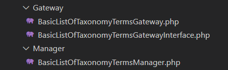
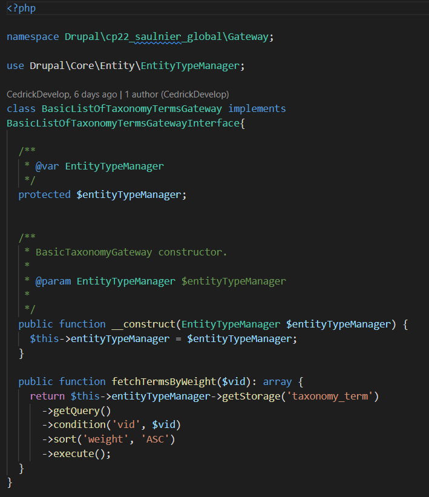
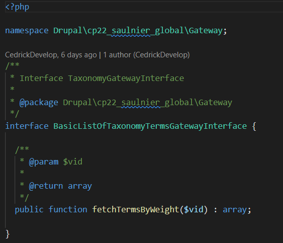
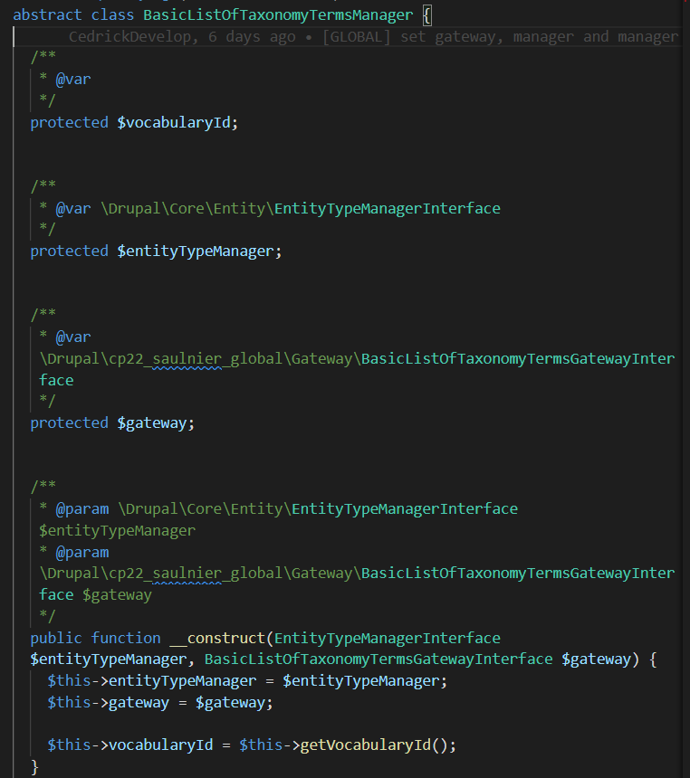
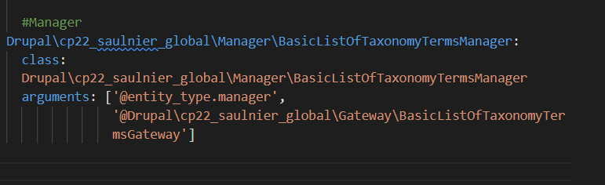
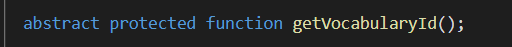
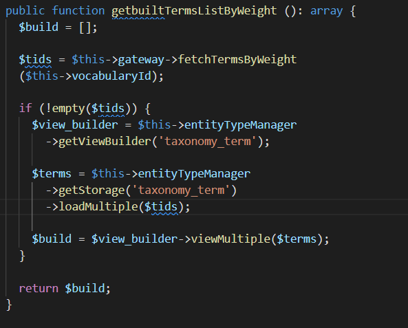

Principe
Dans la même logique que l'architecure avec un manager et gateway dans le même module, la gateway récupère les informations et le manager traite l'info et la redistribue
Or ici la procédure est différente
Un module global contenant :
- La gateway pour la taxonomie
- La gateway pour les nodes
- Un manager général qui recupère l'info et permet aux autres managers de venir piocher ce dont ils ont besoin
Des managers dans chaque module
- Le manager pour les partners
- Le manager pour les réseaux sociaux

La gateway dans le global
Cette gateway ira récupérer un certain type d'information en base de données.
C'est une gateway assez classique qui possède une méthode avec une variable qui permettra d'alimenter les conditions de la query
Le nom des méthodes doit être explicite pour faciliter la recuperation d'informations

La gateway interface dans le global
Cette interface relai entre le manager principal du global et la gateway permet de definir un cadre de récupération des données
Point important bien définir les informations retour qu'il y aura. En effet cette technique de bien organiser et hierarchiser pour les autres dev puissent récupérer ce dont ils ont besoin.

Le manager principal du global
C'est le chef d'orchestre de cette getaway global et sera le pont entre la recuperation des données, leur transformation jusqu'à leur récupération des les differents modules
Classe abstraite
C'est une classe abstraite qui ne peut psa être instanciée et peut juste etre parente d'autre classes. Elle doit être étendue pour être utilisée.
Ses enfants devront implémenter les méthodes abstraites qu'elle contient.
Son constructeur
Son constructeur est assez simple il implémente l'entitypemanager pour transformer la donnée et la gateway pour récupérer la donnée
De même il implémente le résultat récupéré par la méthode abstraite directement dans son constructeur. Cette technique permet ainsi de récupérer automatiquement les résultats renvoyés par les classes enfant.

Son service
Son service va implémenter les arguments entityTypeManager ainsi que la gateway

La méthode abstraite de récupération d'informations
Cette méthode très simple permet de récupérer l'id du vocabulaire de l'élément souhaité et de l'envoyer dans la méthode qui est en contact avec la gateway.
Son rôle est de faire transiter le filtre en provenance de ses enfants.

La méthode de traitement de l'information
Cette méthode récupère l'information du filtre qui aura transitée par get vocabulary
Appelle la gateway avec le filtre en question (pour recuperer les ids des terms)
Puis elle charge le viewBuilder
Elle charge les terms de taxonomy
Et transforme les terms de taxonomy chargés pour être visible et utilisé dans la vue
